Slide text
Humans, Machines, Mathematics
Sang-hyun Kim · KIAS School of Mathematics · KAIST AI4Math
KAIST GRADUATE SCHOOL OF AI FOR MATH
KAIST Graduate School of AI for Math · AIM60003 AI-Based Mathematical Discovery · Lecture 1 · October 13, 2026
Humans, Machines, Mathematics
Sang-hyun Kim · KIAS School of Mathematics · KAIST AI4Math · 56 slides
Humans, Machines, Mathematics
Sang-hyun Kim · KIAS School of Mathematics · KAIST AI4Math
KAIST GRADUATE SCHOOL OF AI FOR MATH


17
× 23
51
34
391
Far future: all calculation by computer · multiplication forgotten
Aub, a low-grade technician: ‘rediscovers’ 17 × 23 = 391 with pencil and paper
Objection: calculation is, by definition, what computers do
— Isaac Asimov, “The Feeling of Power” (1958) · paraphrased
Can we entrust thinking to machines?

Can machines do mathematics?


G. W. Leibniz
(1646–1716)
An instrument to strengthen the mind more than lenses strengthen the eye
— Leibniz, c. 1679 (paraphrased)
AI as a revolutionary lens — as telescopes and microscopes extended perception
— Pushmeet Kohli (Google DeepMind), 2026 · paraphrased
Leibniz’s Stepped Reckoner (1673–1694)
First design for a four-operation calculator · hand crank
Multiplication = repeated addition · division = repeated subtraction

David Hilbert (1862–1943)
A mechanical procedure to decide every mathematical statement?
= An algorithm that solves every mathematical problem?
Where are the limits of machines?

Even: n → n/2 · Odd: n → 3n + 1
6 → 3 → 10 → 5 → 16 → 8 → 4 → 2 → 1
27 → 82 → 41 → 124 → … → 9,232 → … → 1 (111 steps)
Conjecture: every positive integer reaches 1
Open since 1937 · verified up to 2,361,183,241,434,822,606,848
9,232
27 · 1
Verification ≠ proof
“Mathematics is not yet ready
for such problems.” — Paul Erdős

N ← input
N = 1 ?
YES
STOP
NO
even: N ← N ÷ 2
odd: N ← 3N + 1
N = 6 → 8 steps, halts ○
N = 7 → 16 steps ○
N = 27 → 111 steps ○
N = 97 → 118 steps ○
…
All up to 2.36 × 10²¹ ○
The next one ?
Deciding ‘always halts’ = solving the 3n + 1 conjecture

Defining ‘mechanical computation’ — Turing, age 23
Turing machine: the theoretical model of modern computers
A general algorithm to decide halting — does not exist
Alan Turing (1912–1954)
Some problems no computer can solve

Read · write · move one cell — is this ‘thinking’?

Kurt Gödel
(1906–1978)
“We must know. We will know.” — Hilbert, Sep 8, 1930
The day before, same city — Gödel (24) announces incompleteness
Consistent formal arithmetic: undecidable statements exist
Formal proof alone cannot reach all mathematical truth
Either mathematics exceeds the mind, or the mind exceeds any machine
— Gödel, Gibbs Lecture, 1951 (paraphrased)


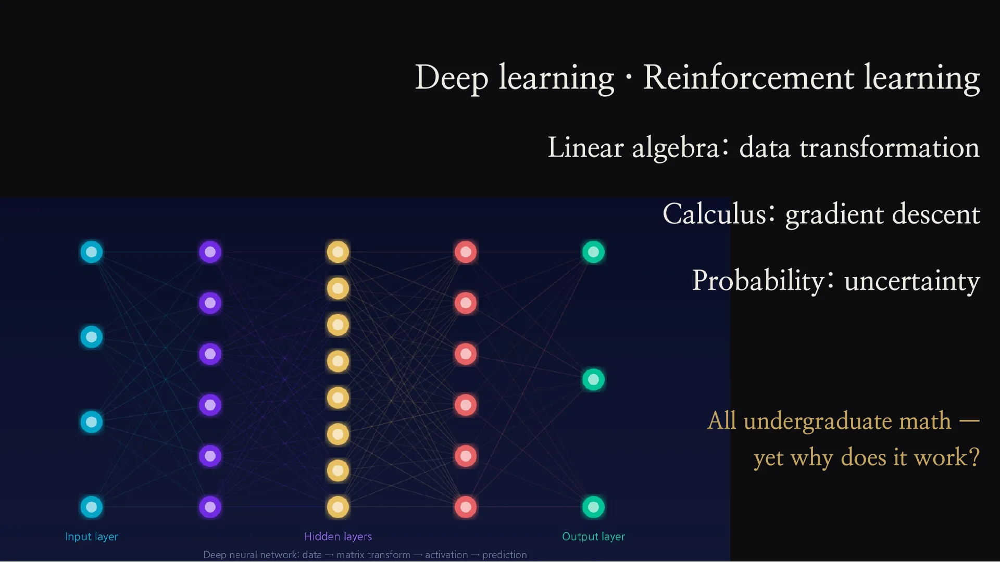
All undergraduate math —
yet why does it work?
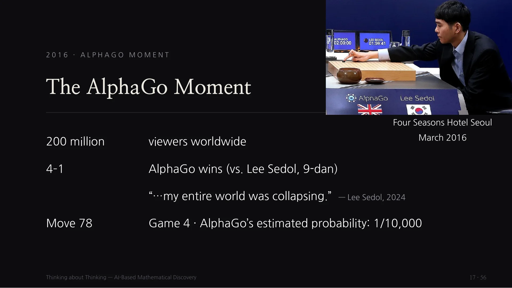
Four Seasons Hotel Seoul
March 2016
200 million · viewers worldwide
4–1 · · AlphaGo wins (vs. Lee Sedol, 9-dan)
“…my entire world was collapsing.” — Lee Sedol, 2024
Move 78 · · Game 4 · AlphaGo’s estimated probability: 1/10,000
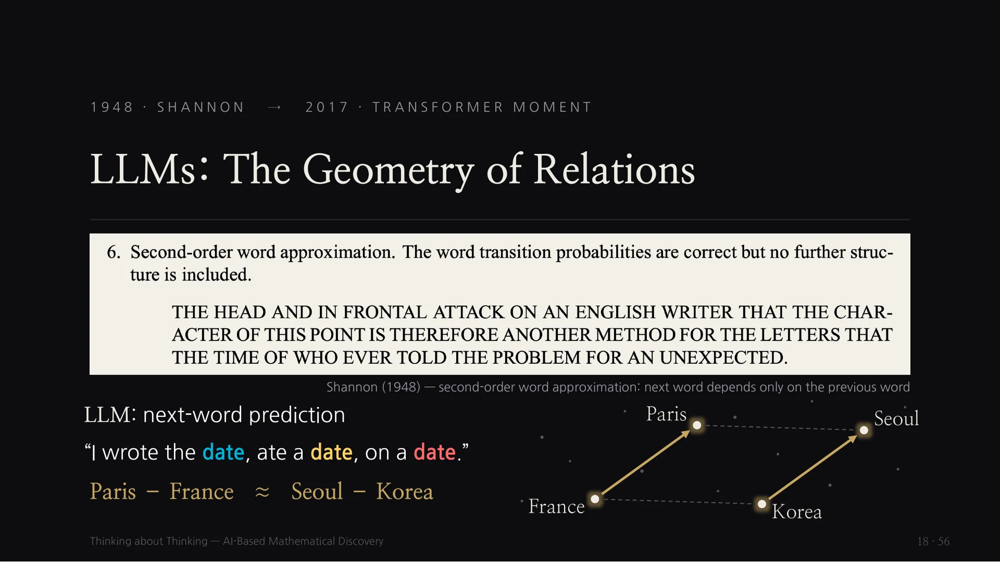
LLM: next-word prediction
“I wrote the date, ate a date, on a date.”
Shannon (1948) — second-order word approximation: next word depends only on the previous word
Paris
France
Seoul
Korea
Paris – France ≈ Seoul – Korea
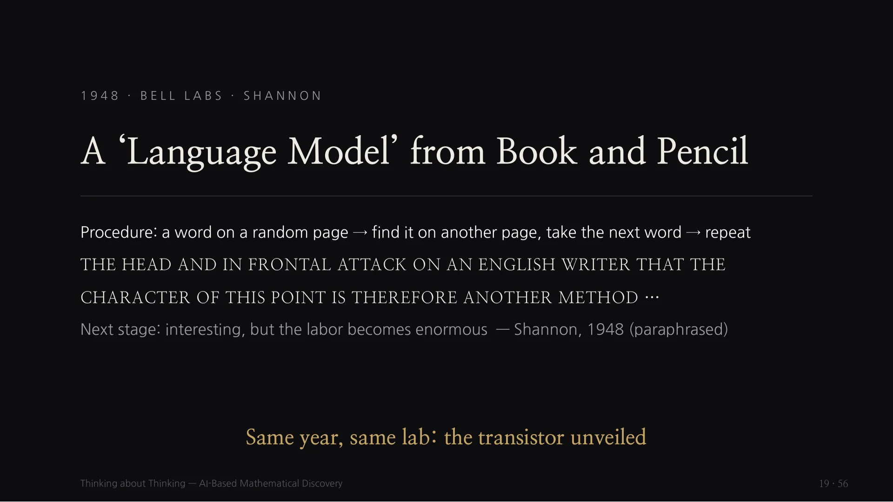
Procedure: a word on a random page → find it on another page, take the next word → repeat
THE HEAD AND IN FRONTAL ATTACK ON AN ENGLISH WRITER THAT THE CHARACTER OF THIS POINT IS THEREFORE ANOTHER METHOD …
Next stage: interesting, but the labor becomes enormous — Shannon, 1948 (paraphrased)
Same year, same lab: the transistor unveiled
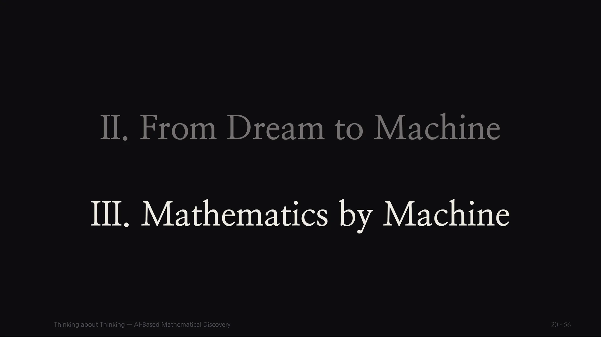
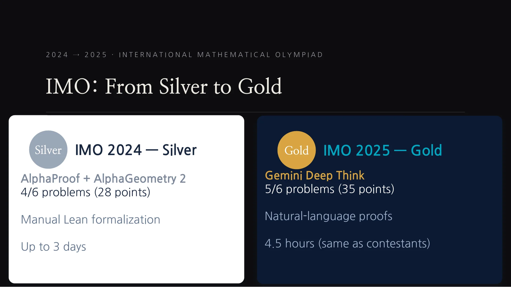
Silver · Gold
IMO 2024 — Silver · IMO 2025 — Gold
AlphaProof + AlphaGeometry 2 4/6 problems (28 points) Manual Lean formalization
Up to 3 days
Gemini Deep Think 5/6 problems (35 points) Natural-language proofs
4.5 hours (same as contestants)
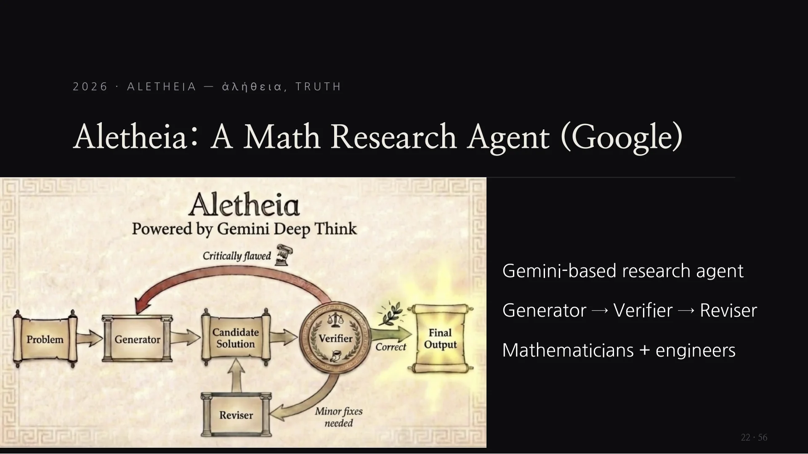
Gemini-based research agent
Generator → Verifier → Reviser
Mathematicians + engineers
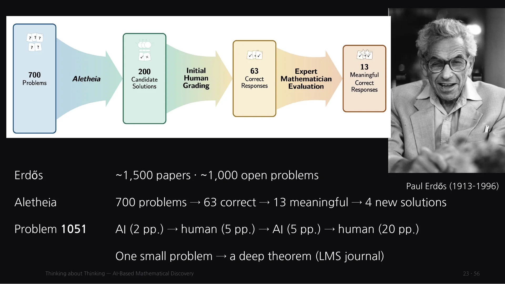
Erdős · · ~1,500 papers · ~1,000 open problems
Aletheia · · 700 problems → 63 correct → 13 meaningful → 4 new solutions
Problem 1051 · AI (2 pp.) → human (5 pp.) → AI (5 pp.) → human (20 pp.)
One small problem → a deep theorem (LMS journal)
Paul Erdős (1913–1996)
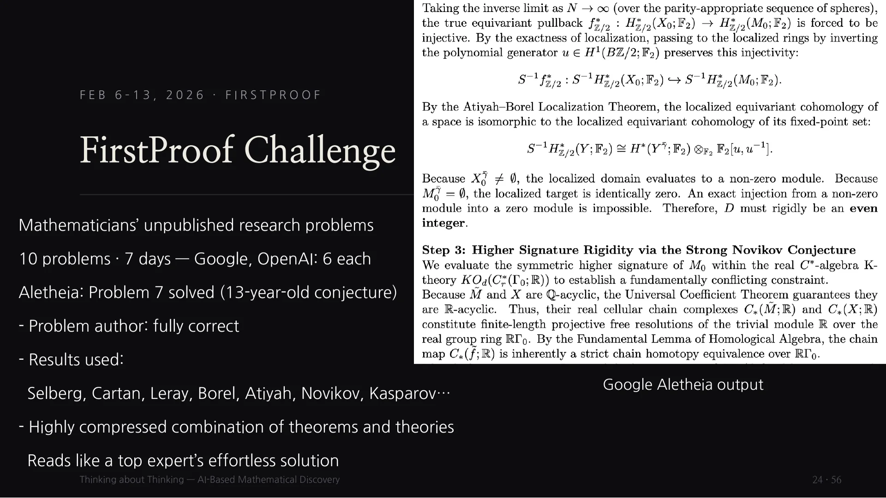
Google Aletheia output
Mathematicians’ unpublished research problems
10 problems · 7 days — Google, OpenAI: 6 each
Aletheia: Problem 7 solved (13-year-old conjecture)
- Problem author: fully correct
- Results used:
Selberg, Cartan, Leray, Borel, Atiyah, Novikov, Kasparov…
- Highly compressed combination of theorems and theories
Reads like a top expert’s effortless solution
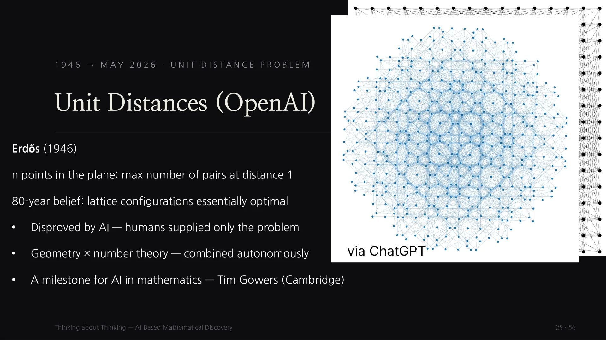
via ChatGPT
Erdős (1946)
n points in the plane: max number of pairs at distance 1
80-year belief: lattice configurations essentially optimal
Disproved by AI — humans supplied only the problem
Geometry × number theory — combined autonomously
A milestone for AI in mathematics — Tim Gowers (Cambridge)
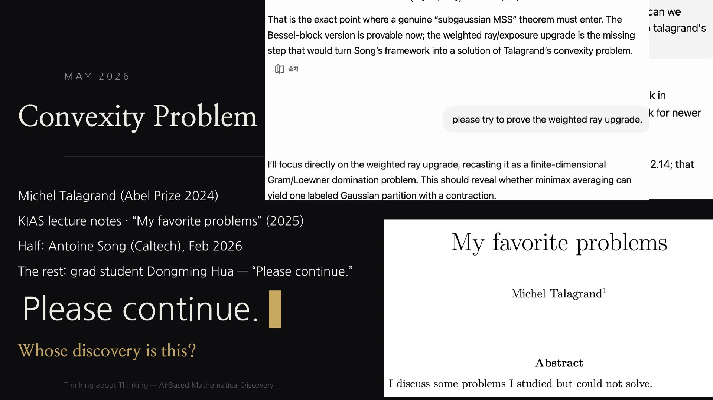
Michel Talagrand (b. 1952)
Michel Talagrand (Abel Prize 2024)
KIAS lecture notes · “My favorite problems” (2025)
Half: Antoine Song (Caltech), Feb 2026
The rest: grad student Dongming Hua — “Please continue.”
Please continue. ▌
Whose discovery is this?
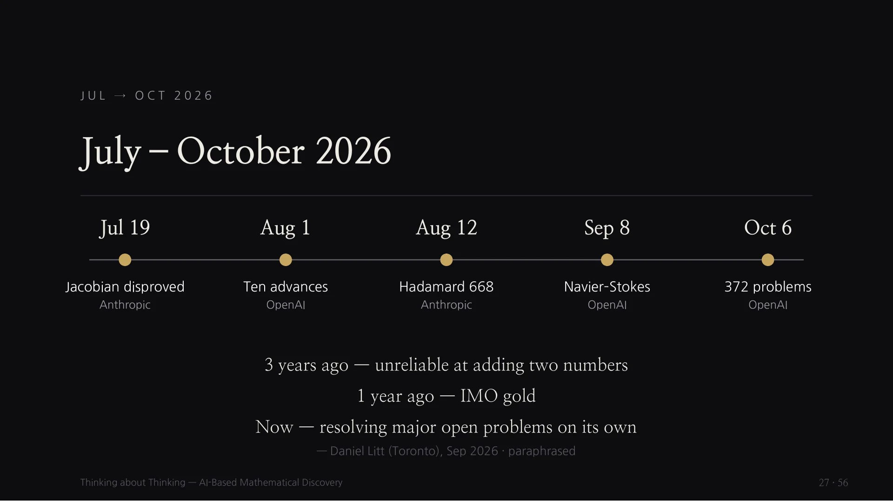
Jul 19
Jacobian disproved
Anthropic
Aug 1
Ten advances
OpenAI
Aug 12
Hadamard 668
Anthropic
Sep 8
Navier–Stokes
OpenAI
Oct 6
372 problems
OpenAI
3 years ago — unreliable at adding two numbers
1 year ago — IMO gold
Now — resolving major open problems on its own
— Daniel Litt (Toronto), Sep 2026 · paraphrased
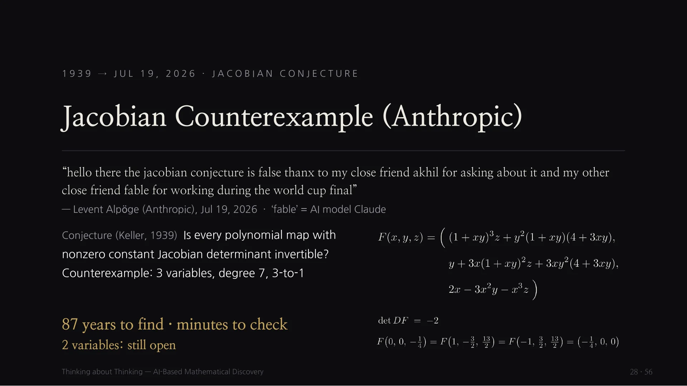
“hello there the jacobian conjecture is false thanx to my close friend akhil for asking about it and my other close friend fable for working during the world cup final”
— Levent Alpöge (Anthropic), Jul 19, 2026 · ‘fable’ = AI model Claude
Conjecture (Keller, 1939) Is every polynomial map with nonzero constant Jacobian determinant invertible?
Counterexample: 3 variables, degree 7, 3-to-1
87 years to find · minutes to check
2 variables: still open
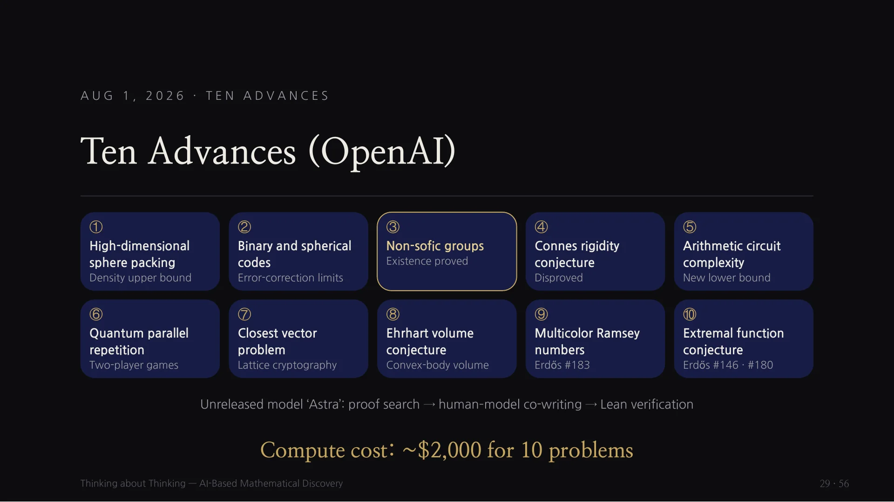
①
②
③
④
⑤
High-dimensional sphere packing
Density upper bound
Binary and spherical codes
Error-correction limits
Non-sofic groups
Existence proved
Connes rigidity conjecture
Disproved
Arithmetic circuit complexity
New lower bound
⑥
⑦
⑧
⑨
⑩
Quantum parallel repetition
Two-player games
Closest vector problem
Lattice cryptography
Ehrhart volume conjecture
Convex-body volume
Multicolor Ramsey numbers
Erdős #183
Extremal function conjecture
Erdős #146 · #180
Unreleased model ‘Astra’: proof search → human–model co-writing → Lean verification
Compute cost: ~$2,000 for 10 problems
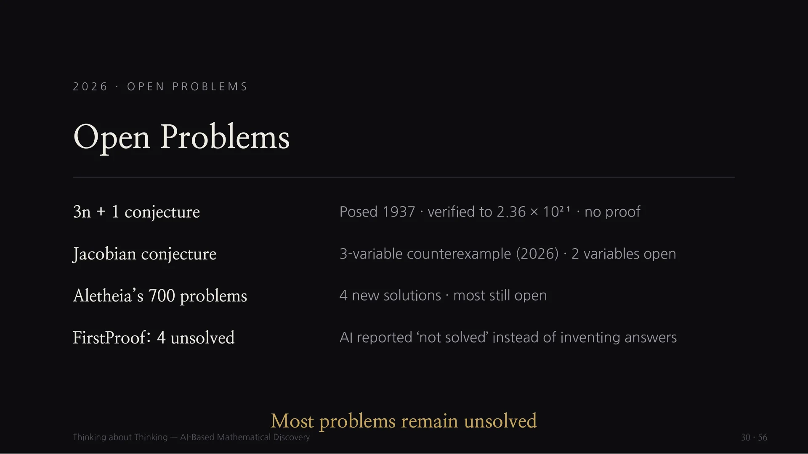
3n + 1 conjecture · Posed 1937 · verified to 2.36 × 10²¹ · no proof
Jacobian conjecture · 3-variable counterexample (2026) · 2 variables open
Aletheia’s 700 problems · 4 new solutions · most still open
FirstProof: 4 unsolved · AI reported ‘not solved’ instead of inventing answers
Most problems remain unsolved
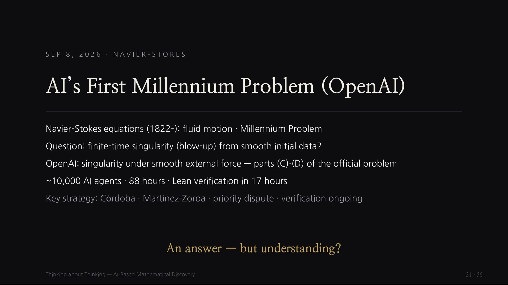
Navier–Stokes equations (1822–): fluid motion · Millennium Problem
Question: finite-time singularity (blow-up) from smooth initial data?
OpenAI: singularity under smooth external force — parts (C)·(D) of the official problem
~10,000 AI agents · 88 hours · Lean verification in 17 hours
Key strategy: Córdoba · Martínez-Zoroa · priority dispute · verification ongoing
An answer — but understanding?
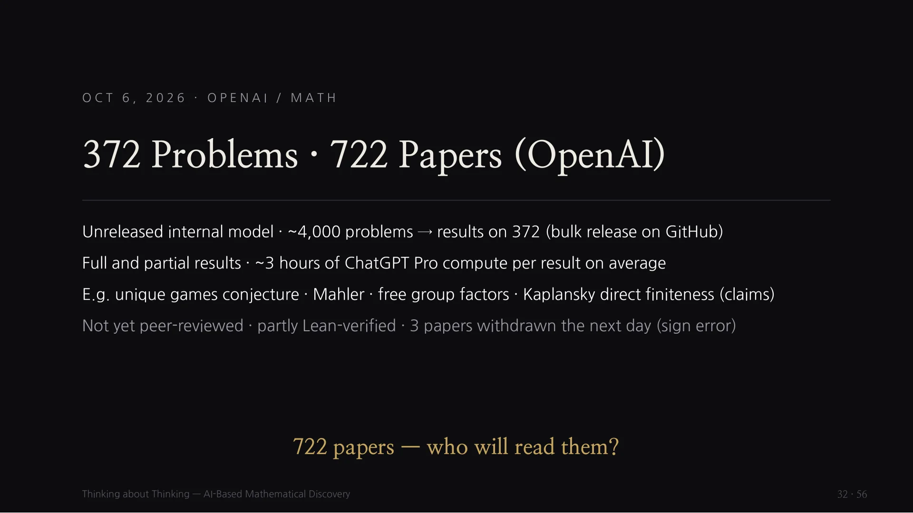
Unreleased internal model · ~4,000 problems → results on 372 (bulk release on GitHub)
Full and partial results · ~3 hours of ChatGPT Pro compute per result on average
E.g. unique games conjecture · Mahler · free group factors · Kaplansky direct finiteness (claims)
Not yet peer-reviewed · partly Lean-verified · 3 papers withdrawn the next day (sign error)
722 papers — who will read them?
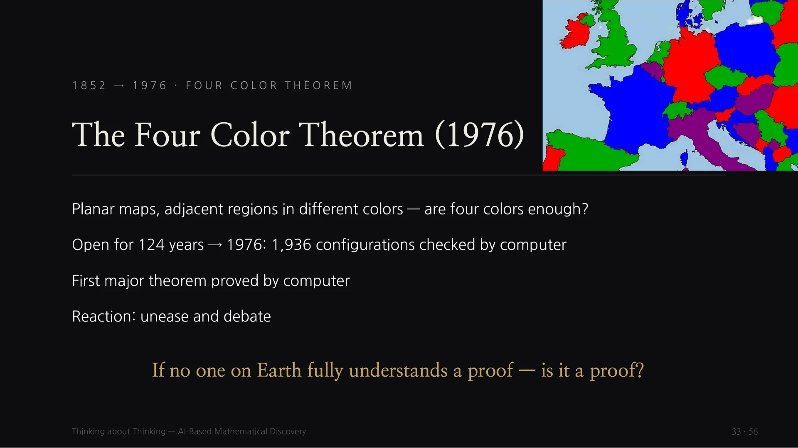
Planar maps, adjacent regions in different colors — are four colors enough?
Open for 124 years → 1976: 1,936 configurations checked by computer
First major theorem proved by computer
Reaction: unease and debate
If no one on Earth fully understands a proof — is it a proof?
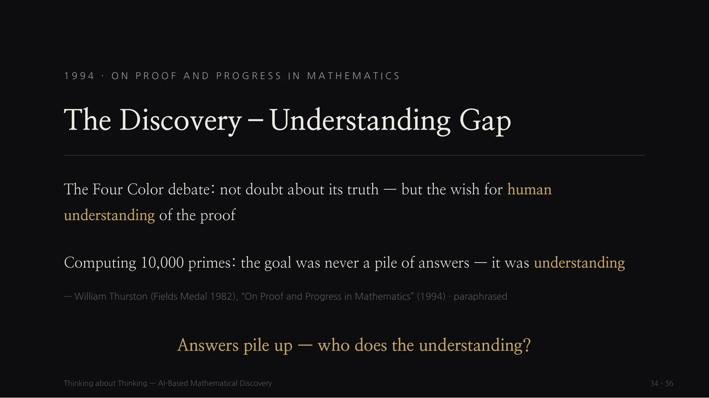
The Four Color debate: not doubt about its truth — but the wish for human understanding of the proof
Computing 10,000 primes: the goal was never a pile of answers — it was understanding
— William Thurston (Fields Medal 1982), “On Proof and Progress in Mathematics” (1994) · paraphrased
Answers pile up — who does the understanding?
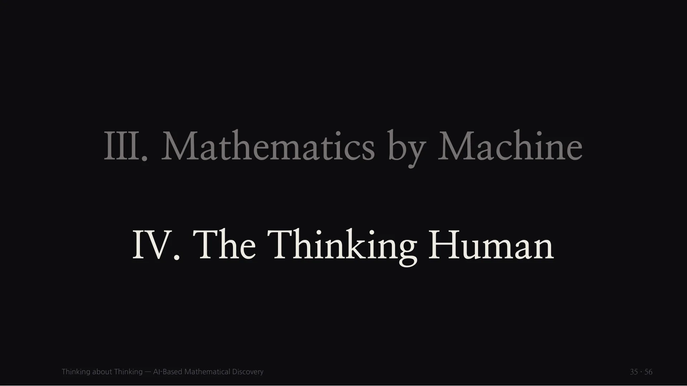
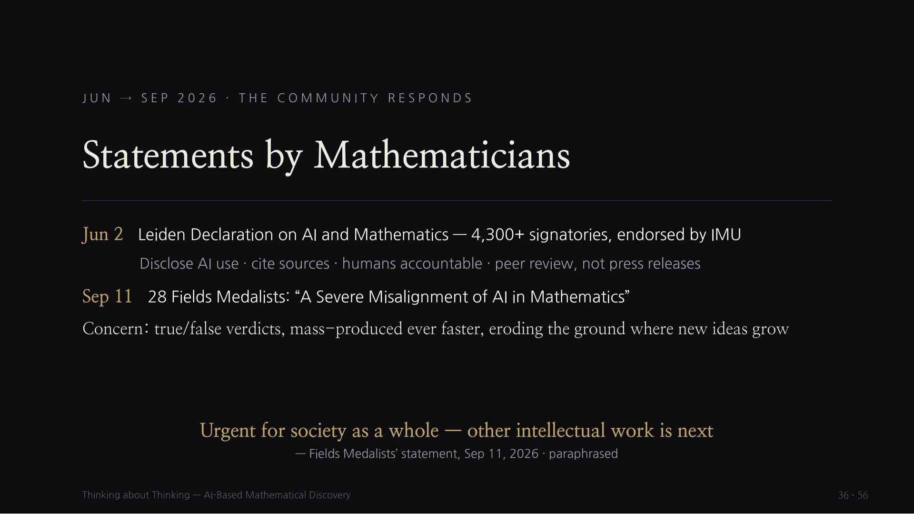
Jun 2 Leiden Declaration on AI and Mathematics — 4,300+ signatories, endorsed by IMU
Disclose AI use · cite sources · humans accountable · peer review, not press releases
Sep 11 28 Fields Medalists: “A Severe Misalignment of AI in Mathematics”
Concern: true/false verdicts, mass-produced ever faster, eroding the ground where new ideas grow
Urgent for society as a whole — other intellectual work is next
— Fields Medalists’ statement, Sep 11, 2026 · paraphrased
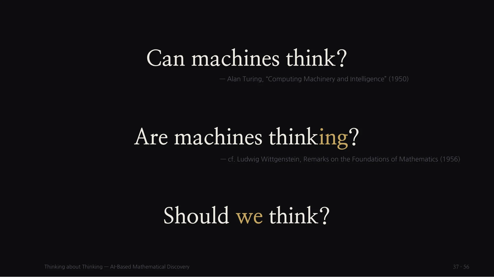
— Alan Turing, “Computing Machinery and Intelligence” (1950)
— cf. Ludwig Wittgenstein, Remarks on the Foundations of Mathematics (1956)
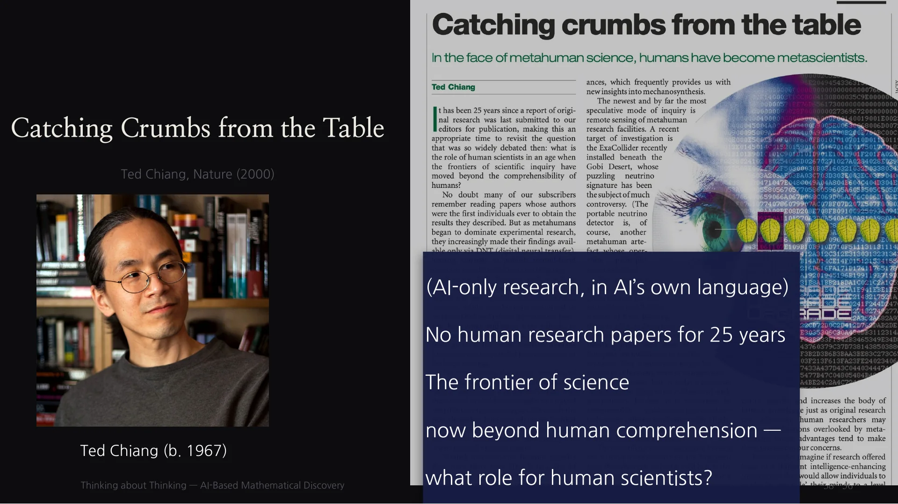
Ted Chiang, Nature (2000)
Ted Chiang (b. 1967)
(AI-only research, in AI’s own language)
No human research papers for 25 years
The frontier of science
now beyond human comprehension —
what role for human scientists?
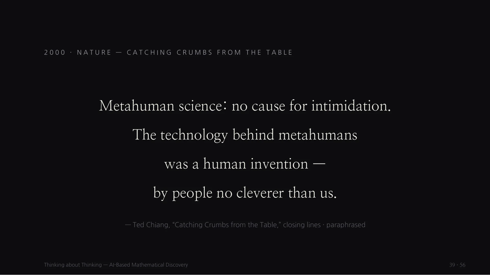
— Ted Chiang, “Catching Crumbs from the Table,” closing lines · paraphrased
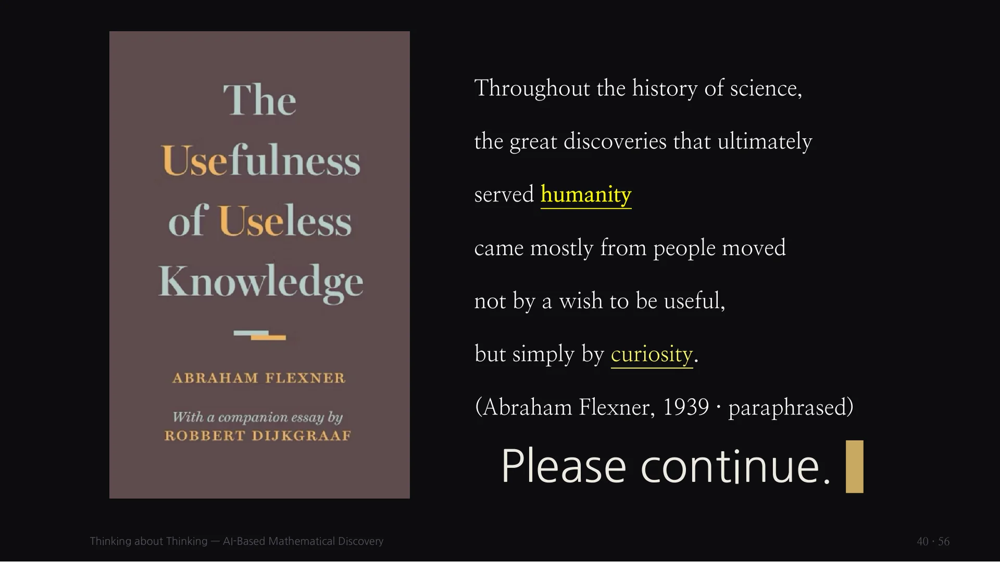
Throughout the history of science,
the great discoveries that ultimately
served humanity
came mostly from people moved
not by a wish to be useful,
but simply by curiosity.
(Abraham Flexner, 1939 · paraphrased)
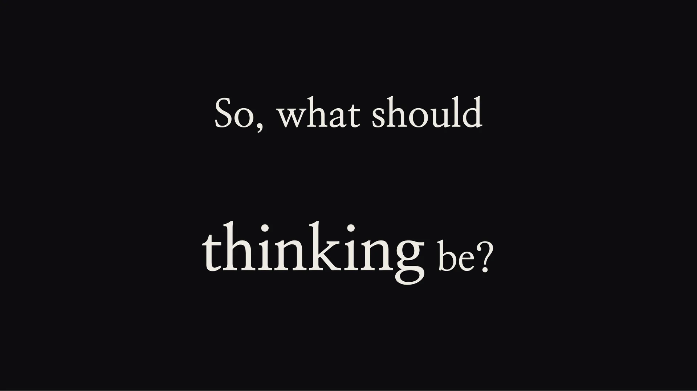
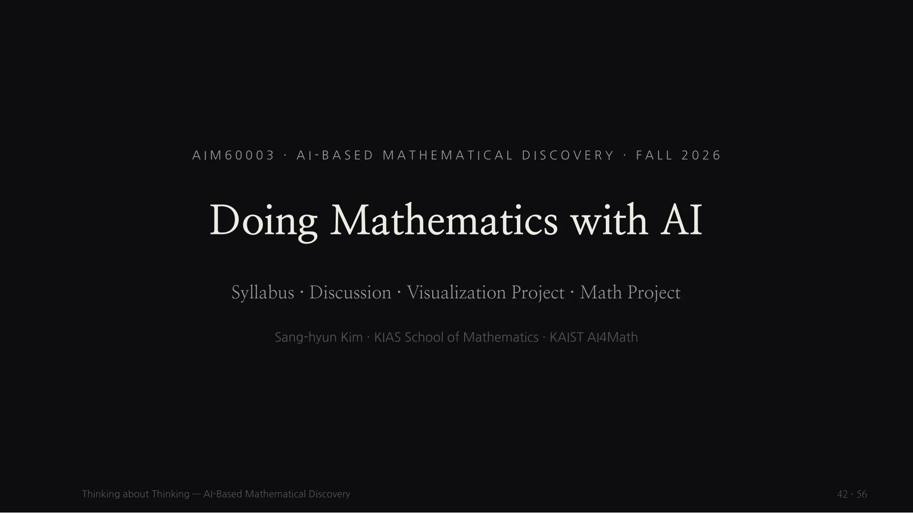
AIM60003 · AI-BASED MATHEMATICAL DISCOVERY · FALL 2026
Syllabus · Discussion · Visualization Project · Math Project
Sang-hyun Kim · KIAS School of Mathematics · KAIST AI4Math

1 · Oct 13 · Instructor’s lecture · Thinking about Thinking · two visualizations · Thompson’s group F
— · Mid term · No class
2 · Oct 27 ?? · Class discussion · Five topics on AI and the future of mathematics · five groups of five
3 · Nov 3 · Visual / Math projects I · Visualization (5 min / each) and math (5 min / each) projects
4 · Nov 17 ?? · Visual / Math projects II · Visualization (5 min / each) and math (5 min / each) projects
Lecture 2, 4: Oct 29–30 (Th/Fr), Nov 3 (Tue): 9am,
Nov 16 (M), 18–20 (WThF), 23 (M), 30–Dec 4 (M–F), 7, 9, 10 (MWTh)
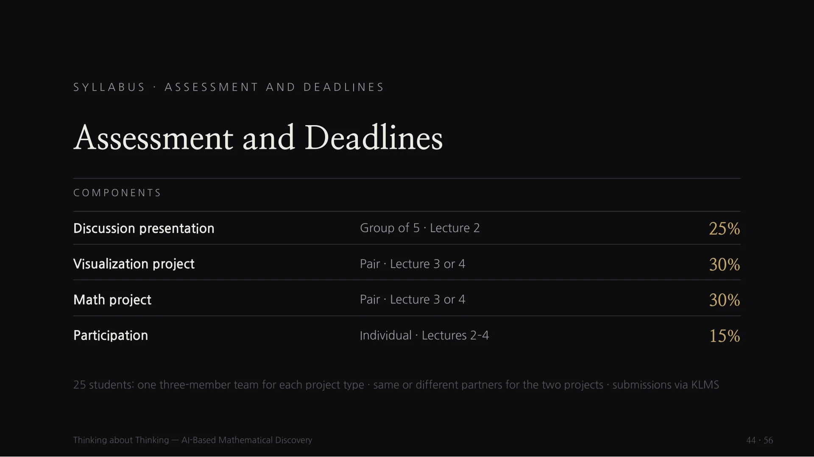
COMPONENTS
Discussion presentation · Group of 5 · Lecture 2 · 25%
Visualization project · Pair · Lecture 3 or 4 · 30%
Math project · Pair · Lecture 3 or 4 · 30%
Participation · Individual · Lectures 2–4 · 15%
25 students: one three-member team for each project type · same or different partners for the two projects · submissions via KLMS
1 · Class dates · Lecture 2 and Lecture 3
2 · Five groups of five: discussion topics · Email me three choices by Oct 20
3 · Discussion slides · Email me by 1 day before Lecture 2
4 · Visualization OR Math Research
Email me:
proposals by Oct 20
slides by 1 day before presentation
notes (1–3 pages) after the presentation
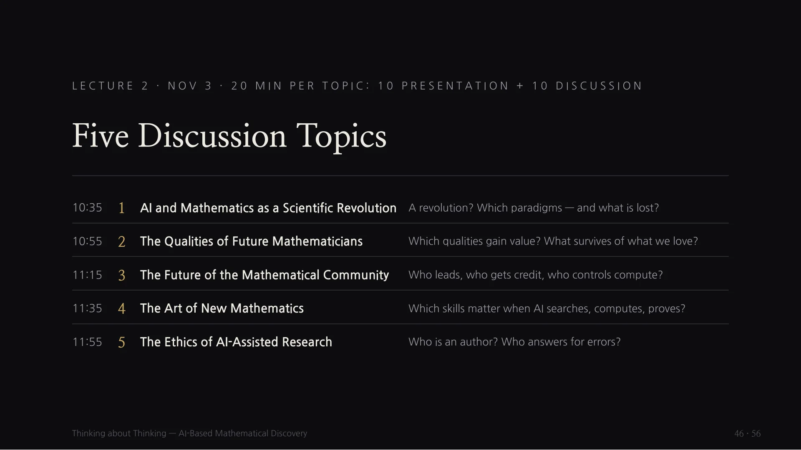
10:35 · 1 · AI and Mathematics as a Scientific Revolution · A revolution? Which paradigms — and what is lost?
10:55 · 2 · The Qualities of Future Mathematicians · Which qualities gain value? What survives of what we love?
11:15 · 3 · The Future of the Mathematical Community · Who leads, who gets credit, who controls compute?
11:35 · 4 · The Art of New Mathematics · Which skills matter when AI searches, computes, proves?
11:55 · 5 · The Ethics of AI-Assisted Research · Who is an author? Who answers for errors?
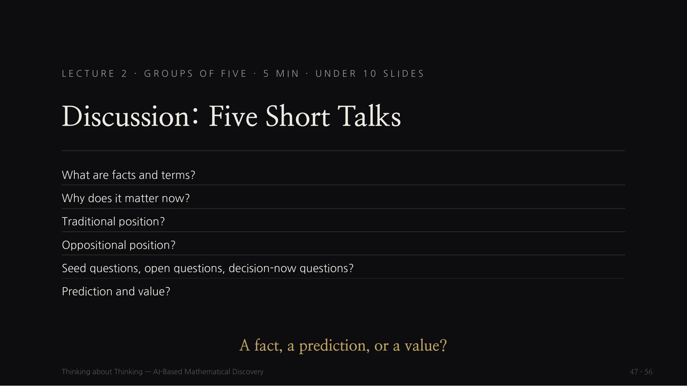
What are facts and terms?
Why does it matter now?
Traditional position?
Oppositional position?
Seed questions, open questions, decision-now questions?
Prediction and value?
A fact, a prediction, or a value?
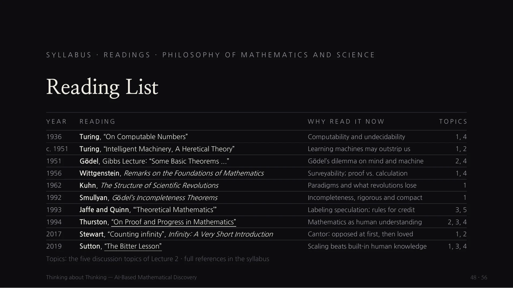
YEAR · READING · WHY READ IT NOW · TOPICS
1936 · Turing, “On Computable Numbers” · Computability and undecidability · 1, 4
c. 1951 · Turing, “Intelligent Machinery, A Heretical Theory” · Learning machines may outstrip us · 1, 2
1951 · Gödel, Gibbs Lecture: “Some Basic Theorems ...” · Gödel’s dilemma on mind and machine · 2, 4
1956 · Wittgenstein, Remarks on the Foundations of Mathematics · Surveyability; proof vs. calculation · 1, 4
1962 · Kuhn, The Structure of Scientific Revolutions · Paradigms and what revolutions lose · 1
1992 · Smullyan, Gödel’s Incompleteness Theorems · Incompleteness, rigorous and compact · 1
1993 · Jaffe and Quinn, “‘Theoretical Mathematics’” · Labeling speculation; rules for credit · 3, 5
1994 · Thurston, “On Proof and Progress in Mathematics” · Mathematics as human understanding · 2, 3, 4
2017 · Stewart, “Counting infinity”, Infinity: A Very Short Introduction · Cantor: opposed at first, then loved · 1, 2
2019 · Sutton, “The Bitter Lesson” · Scaling beats built-in human knowledge · 1, 3, 4
Topics: the five discussion topics of Lecture 2 · full references in the syllabus
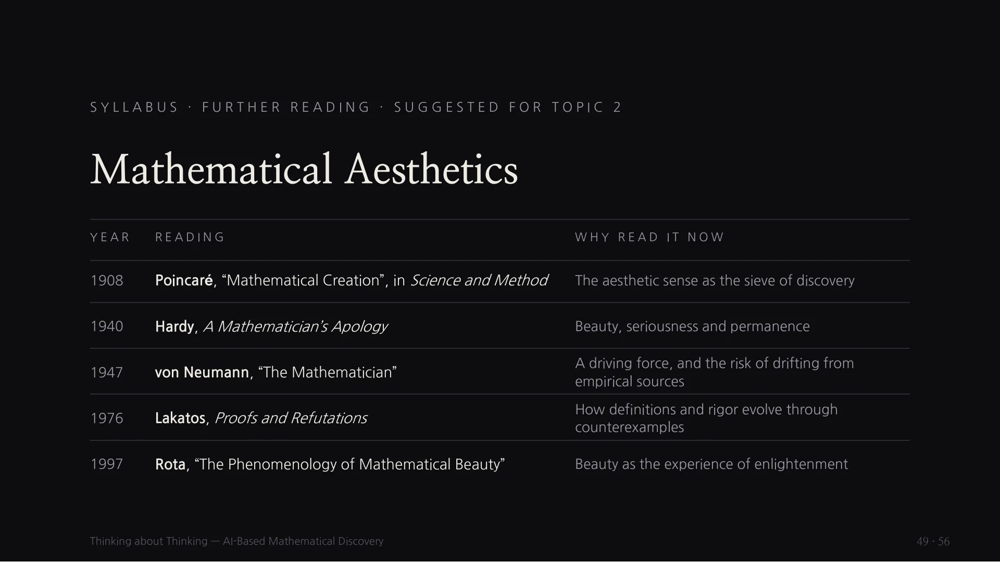
YEAR · READING · WHY READ IT NOW
1908 · Poincaré, “Mathematical Creation”, in Science and Method · The aesthetic sense as the sieve of discovery
1940 · Hardy, A Mathematician’s Apology · Beauty, seriousness and permanence
1947 · von Neumann, “The Mathematician” · A driving force, and the risk of drifting from empirical sources
1976 · Lakatos, Proofs and Refutations · How definitions and rigor evolve through counterexamples
1997 · Rota, “The Phenomenology of Mathematical Beauty” · Beauty as the experience of enlightenment
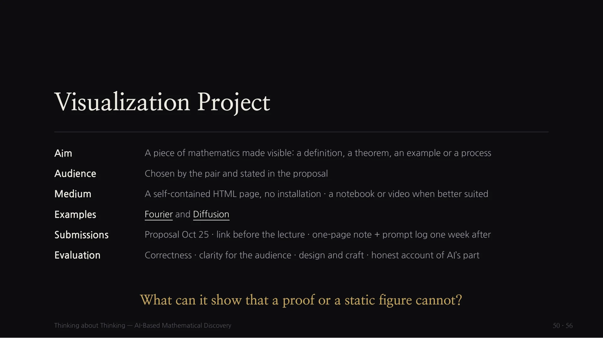
Aim · A piece of mathematics made visible: a definition, a theorem, an example or a process
Audience · Chosen by the pair and stated in the proposal
Medium · A self-contained HTML page, no installation · a notebook or video when better suited
Examples · Fourier and Diffusion
Submissions · Proposal Oct 25 · link before the lecture · one-page note + prompt log one week after
Evaluation · Correctness · clarity for the audience · design and craft · honest account of AI’s part
What can it show that a proof or a static figure cannot?
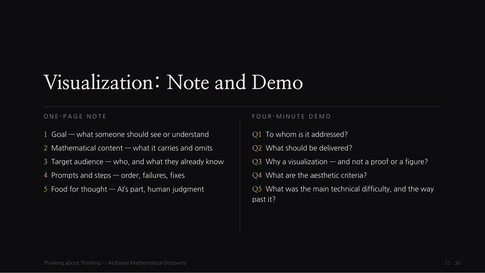
ONE-PAGE NOTE · FOUR-MINUTE DEMO
1 Goal — what someone should see or understand
2 Mathematical content — what it carries and omits
3 Target audience — who, and what they already know
4 Prompts and steps — order, failures, fixes
5 Food for thought — AI’s part, human judgment
Q1 To whom is it addressed?
Q2 What should be delivered?
Q3 Why a visualization — and not a proof or a figure?
Q4 What are the aesthetic criteria?
Q5 What was the main technical difficulty, and the way past it?
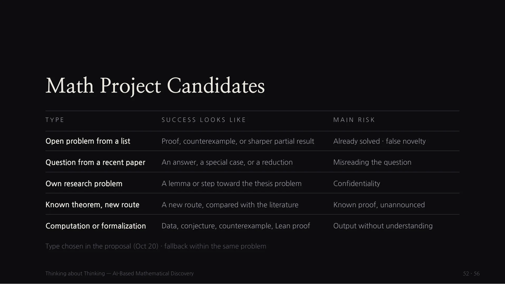
TYPE · SUCCESS LOOKS LIKE · MAIN RISK
Open problem from a list · Proof, counterexample, or sharper partial result · Already solved · false novelty
Question from a recent paper · An answer, a special case, or a reduction · Misreading the question
Own research problem · A lemma or step toward the thesis problem · Confidentiality
Known theorem, new route · A new route, compared with the literature · Known proof, unannounced
Computation or formalization · Data, conjecture, counterexample, Lean proof · Output without understanding
Type chosen in the proposal (Oct 25) · fallback within the same problem
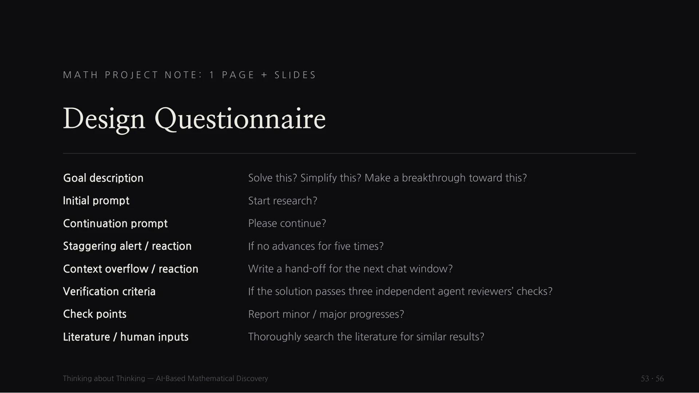
Goal description · Solve this? Simplify this? Make a breakthrough toward this?
Initial prompt · Start research?
Continuation prompt · Please continue?
Staggering alert / reaction · If no advances for five times?
Context overflow / reaction · Write a hand-off for the next chat window?
Verification criteria · If the solution passes three independent agent reviewers’ checks?
Check points · Report minor / major progresses?
Literature / human inputs · Thoroughly search the literature for similar results?

GOAL DESCRIPTION
Prove PL+(S1) contains ℤ2 ∗ ℤ by this construction
⇒ Prove PL+(S1) does not contain ℤ2 ∗ ℤ
⇒ Classify finitely generated subgroups of PL+(S1)
INITIAL PROMPT
Give a rigorous solution to this mathematical research problem.
The solution should be at a publishable level.
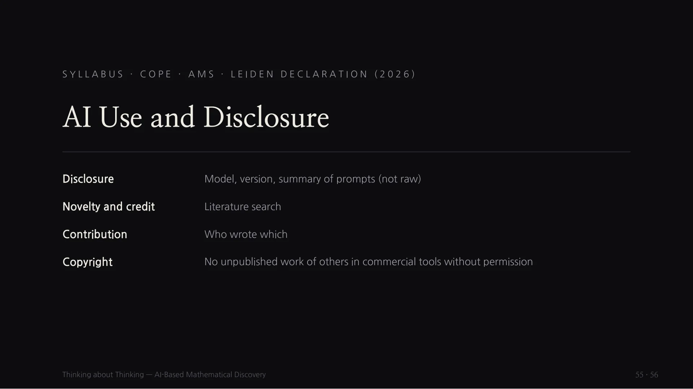
Disclosure · Model, version, summary of prompts (not raw)
Novelty and credit · Literature search
Contribution · Who wrote which
Copyright · No unpublished work of others in commercial tools without permission
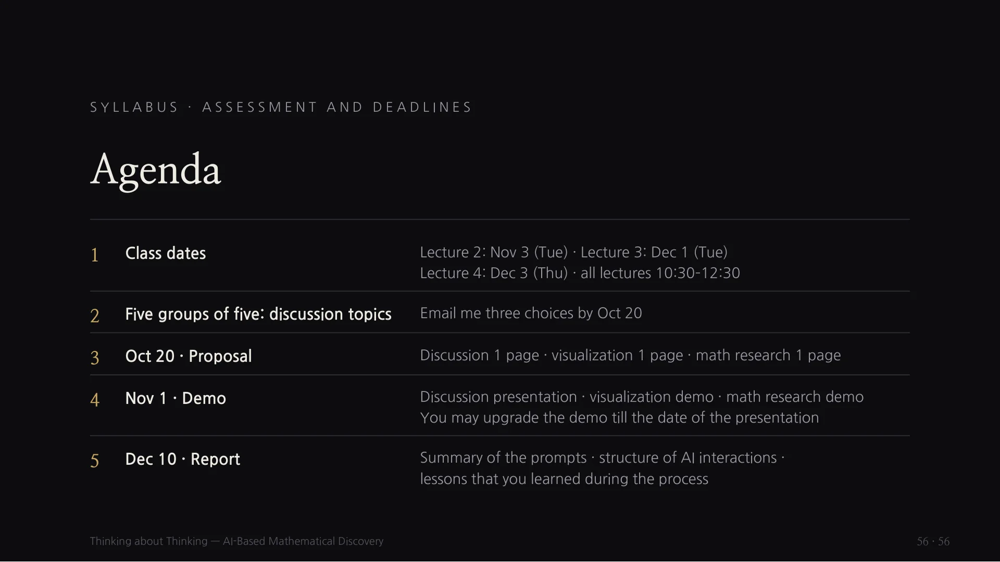
1 · Class dates · Lecture 2 and Lecture 3
2 · Five groups of five: discussion topics · Email me three choices by Oct 20
3 · Discussion slides · Email me by 1 day before Lecture 2
4 · Visualization OR Math Research
Email me:
proposals by Oct 20
slides by 1 day before presentation
notes (1–3 pages) after the presentation